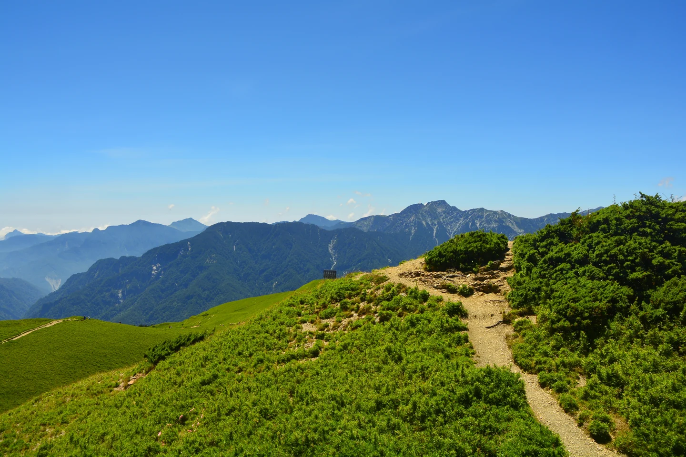
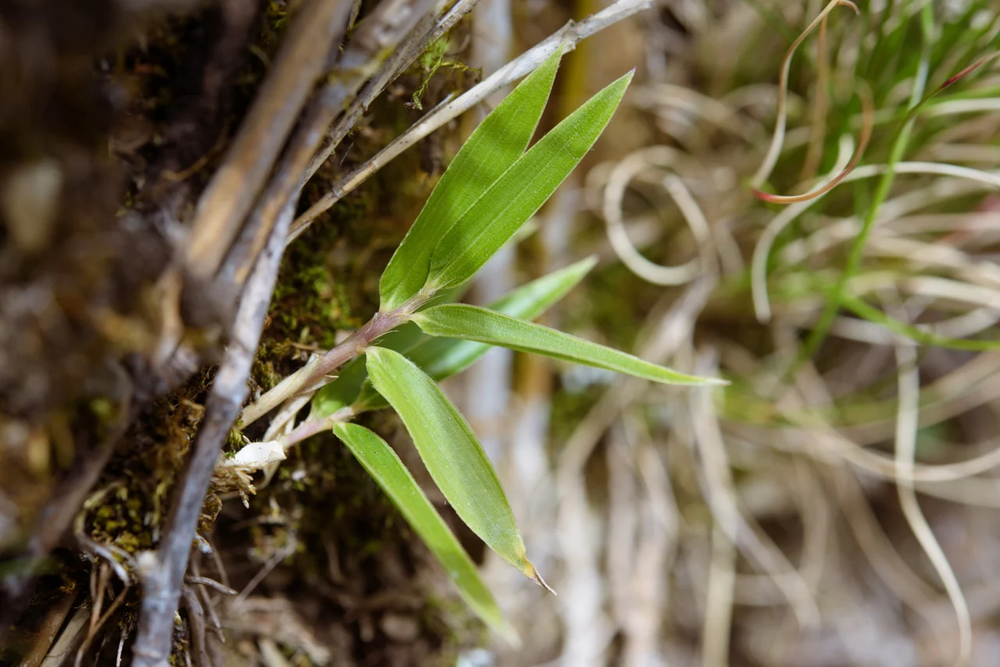
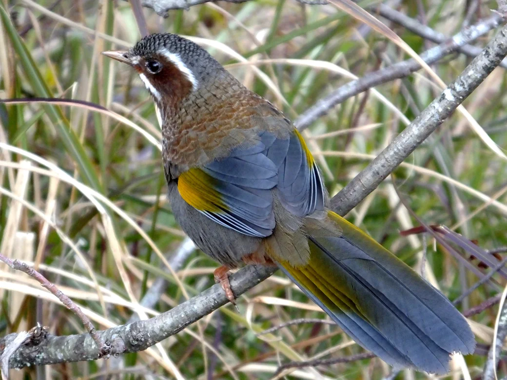

為什麼合歡山有些山坡只見箭竹？
高山
在合歡山，有的山坡是一整片高大的樹，有的卻是大片箭竹。為什麼相距不遠，植被看起來那麼不同？

Weifukuo · CC BY-SA 4.0 · 本站縮圖

森林在哪裡停下來？
海拔升高，氣溫通常下降。到了高處，低溫縮短了樹木能生長的時間，稜線上的強風也讓樹苗難以長高。林線就是成片森林大致能延伸到的上界。合歡山有些路段可以清楚看見臺灣冷杉林逐漸讓位給較矮的灌叢與箭竹。
成片森林林線箭竹、灌叢與岩稜
低矮的植被還能往上長
玉山箭竹能靠在土裡橫向延伸的莖長出新芽，逐漸形成大片草坡。越往高處，有時會看到岩屑地和貼近地面生長的玉山圓柏等植物，這類高處的低矮植被常稱為高山凍原。山坡朝向、受風程度與過去的擾動也會改變草坡和森林的邊界。
高山草原
靠近林線的開闊坡地，能看到成片草坡與低矮灌叢交錯。
植物玉山箭竹常成片生長，玉山杜鵑會在部分草坡和灌叢間開花。
動物金翼白眉會在高山灌叢和林緣活動。要認牠，可以留意翅膀上的金黃色斑塊和臉側白紋。


金翼白眉怎麼認？

Charles Lam · CC BY-SA 2.0 · 本站縮圖

在高山灌叢和林緣，可以留意翅膀外側的金黃色斑塊，以及臉側的細白紋。
高山凍原與岩稜
稜線高處日照強、風大，碎石坡的土層很薄，能保住的水少。
植物玉山圓柏在強風下可以長成低矮灌木，有些枝條近乎貼著地面。
動物岩鷯可在裸露岩稜或碎石地活動，常在石頭間找小昆蟲等食物。
想一想
同一座山上的植被有高低、濃密和疏疏落落的變化。比較草坡、林緣和岩稜，比記一條固定的海拔數字更容易看懂這些變化。
看到草坡，就能知道它在林線上方嗎？
不能只靠草坡判斷。先看周圍森林能長到哪裡，再考慮坡向、風勢或過去的擾動。